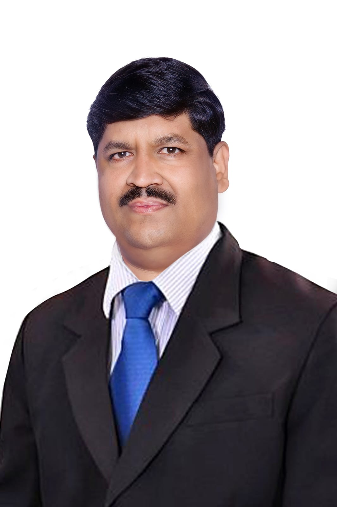

Dr. Muttanna Mantur
Achievements

A glimpse of Dr. Mantur's journey in computer education.
Dr. Muttanna Mantur, hailing from the small village of Shiraguppi, Karnataka, has achieved remarkable milestones in the field of computer education:
- Early Life: Born in Shiraguppi, Karnataka (use placeholder date of birth).
- Founder of Computer Guru: Started his journey in computer education by founding Computer Guru, a platform to empower students with technology skills.
- BLDE College: Appointed as an Assistant Professor at BLDE College, Jamkhandi, where he nurtured future talent in computer science.
- Government Service: Joined the Government of Karnataka as a BCA Professor, expanding his contributions to public education.
- HOD Position: Currently serving as the Head of the Computer Science Department at Government Women's College, Jamkhandi.
More About Dr. Muttanna Mantur
Dr. Mantur has dedicated his life to empowering students through education. He is known for his innovative teaching methods and commitment to bringing modern technology to rural areas.

Dr. Mantur conducting a workshop for students.